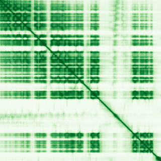

type: protein-evaluation gene: "BLTP3A" date: 2026-06-03 tags: [protein-scout, rejected, evaluation] status: rejected ---
BLTP3A — REJECTED (核定位证据不足 (核定位得分 3/10 ≤ 3))
1. 基本信息
| 项目 | 内容 |
|---|---|
| 基因名 / 别名 | BLTP3A / C6orf107, UHRF1BP1 |
| 蛋白名称 | Bridge-like lipid transfer protein family member 3A |
| 蛋白大小 | 1440 aa / 159.5 kDa |
| UniProt ID | Q6BDS2 |
| 评估日期 | 2026-06-03 |
2. 评分总览
| 维度 | 得分 | 满分 | 加权后 | 关键证据摘要 |
|---|---|---|---|---|
| 核定位特异性 | 3/10 | ×4 | 12 | HPA: 暂无HPA定位数据; UniProt: Late endosome |
| 蛋白大小 | 5/10 | ×1 | 5 | 1440 aa / 159.5 kDa |
| 研究新颖性 | 10/10 | ×5 | 50 | PubMed strict=2 篇 (≤20→10) |
| 三维结构 | 6/10 | ×3 | 18 | AlphaFold v6 pLDDT=66.2; PDB: 无 |
| 调控结构域 | 7/10 | ×2 | 14 | InterPro: IPR026728; Pfam: PF24917 |
| PPI 网络 | 2/10 | ×3 | 6 | STRING 0 partners; IntAct 15 interactions |
| 互证加分 | — | max +3 | 0.5 | PDB+AF+STRING+IntAct cross-validation |
| 原始总分 | 105.5/180 | |||
| 归一化总分 | 58.6/100 |
3. 详细分析
3.1 核定位证据
| 来源 | 定位 | 可信度 |
|---|---|---|
| Protein Atlas (IF) | 暂无HPA定位数据 | 暂无数据 |
| UniProt | Late endosome | Swiss-Prot/TrEMBL |
IF 图像状态: HPA未检测到可靠IF图像信号。核定位证据基于HPA subcellular localization注释、UniProt注释和GO-CC术语。
GO Cellular Component:
- late endosome (GO:0005770)
结论: 核定位证据不足，HPA与UniProt存在矛盾或缺乏核注释。
3.2 蛋白大小评估
评价: 蛋白偏小/偏大，实验操作有一定难度。
3.3 研究现状
| 指标 | 数值 |
|---|---|
| PubMed strict count | 2 |
| PubMed broad count | 2 |
| 别名(未计入scoring) | Aliases observed but not used for scoring: C6orf107, UHRF1BP1 |
关键文献: 1. BLTP3A is associated with membranes of the late endocytic pathway and is an effector of CASM.. *The EMBO journal*. PMID: 40935891 2. BLTP3A is associated with membranes of the late endocytic pathway and is an effector of CASM.. *bioRxiv : the preprint server for biology*. PMID: 39386594
评价: 极度新颖，几乎未被系统研究（PubMed ≤20篇）。
3.4 三维结构分析
| 指标 | 数值 |
|---|---|
| AlphaFold 版本 | v6 |
| AlphaFold 平均 pLDDT | 66.2 |
| 高置信度残基 (pLDDT>90) 占比 | 30.1% |
| 置信残基 (pLDDT 70-90) 占比 | 28.1% |
| 中等置信 (pLDDT 50-70) 占比 | 7.1% |
| 低置信 (pLDDT<50) 占比 | 34.8% |
| 有序区域 (pLDDT>70) 占比 | 58.2% |
| 可用 PDB 条目 | 无 |
PAE: PAE 图像未生成本地文件（standard evaluation），结构判断基于 AlphaFold pLDDT 统计。
评价: AlphaFold 预测质量有限（pLDDT=66.2），有序残基占 58.2%。
3.5 结构域分析
| 来源 | 结构域 |
|---|---|
| InterPro/Pfam | InterPro: IPR026728; Pfam: PF24917 |
染色质调控潜力分析: 存在已知结构域注释，可作为功能研究的结构基础。
3.6 PPI 网络
STRING 预测互作 (combined score >0.4):
| Partner | Combined Score | Experimental | 功能类别 |
|---|---|---|---|
| — | — | — | — |
实验验证互作 (IntAct):
| Partner | 方法 | PMID | ||
|---|---|---|---|---|
| TGOLN2 | psi-mi:"MI:1314"(proximity-dependent biotin identi | pubmed:29568061 | imex:IM-26301 | |
| H1-2 | psi-mi:"MI:0030"(cross-linking study) | pubmed:30021884 | imex:IM-26653 | |
| H2BC9 | psi-mi:"MI:0030"(cross-linking study) | pubmed:30021884 | imex:IM-26653 | |
| HMGA1 | psi-mi:"MI:0030"(cross-linking study) | pubmed:30021884 | imex:IM-26653 | |
| M | psi-mi:"MI:0007"(anti tag coimmunoprecipitation) | imex:IM-27674 | pubmed:33208464 | |
| CBY1 | psi-mi:"MI:2222"(inference by socio-affinity scori | pubmed:unassigned1312 | ||
| GDAP2 | psi-mi:"MI:2222"(inference by socio-affinity scori | pubmed:unassigned1312 | ||
| CEP76 | psi-mi:"MI:2222"(inference by socio-affinity scori | pubmed:unassigned1312 | ||
| TSG101 | psi-mi:"MI:2222"(inference by socio-affinity scori | pubmed:unassigned1312 | ||
| UQCC2 | psi-mi:"MI:2222"(inference by socio-affinity scori | pubmed:unassigned1312 |
PPI 互证分析:
- 仅IntAct实验
- STRING partners: 0，IntAct interactions: 15
- 调控相关比例: 0 / 0 = 0%
评价: STRING 0 个预测互作，IntAct 15 个实验互作。调控相关配体占比 0%。
3.7 多库互证
| 维度 | 来源 | 结果 | 是否一致 |
|---|---|---|---|
| 三维结构 | AlphaFold pLDDT=66.2 + PDB: 无 | pLDDT=66.2, v6 | 仅预测 |
| 定位 | UniProt + HPA | Late endosome / 暂无HPA定位数据 | 一致 |
| PPI | STRING + IntAct | 0 + 15 interactions | 数据有限 |
互证加分明细:
- PDB + AlphaFold 双源验证: +0
- 多库定位一致 (2源): +0.5
- STRING + IntAct 双源验证: +0
- 结构域 + AlphaFold 质量: +0
- PDB 多条目覆盖: +0
总分: +0.5 / max +3
4. 总体评价
推荐等级: ⭐⭐⭐ (REJECTED)
核心优势: 1. BLTP3A — Bridge-like lipid transfer protein family member 3A，极度新颖，几乎未被系统研究（PubMed ≤20篇）。 2. 蛋白大小1440 aa，蛋白偏小/偏大，实验操作有一定难度。
风险/不确定性: 1. PubMed 2 篇，研究基础极有限，功能注释不完整 2. AlphaFold 预测质量一般（pLDDT=66.2），需要更多实验结构验证
下一步建议:
- [ ] 查阅最新关键文献补充研究背景
- [ ] 获取 Protein Atlas IF 图像确认亚细胞定位
- [ ] 设计体外实验验证核定位及潜在调控功能
- [ ] 该蛋白核定位证据不足（≤3/10），不建议作为核蛋白研究目标。
5. 数据来源
- UniProt: https://www.uniprot.org/uniprotkb/Q6BDS2
- Protein Atlas: https://www.proteinatlas.org/search/BLTP3A
- PubMed: https://pubmed.ncbi.nlm.nih.gov/?term=BLTP3A
- AlphaFold: https://alphafold.ebi.ac.uk/entry/Q6BDS2
- STRING: https://string-db.org/network/9606.ENSP00000
- Data fetched live: 2026-06-03
